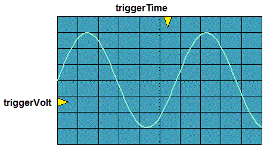
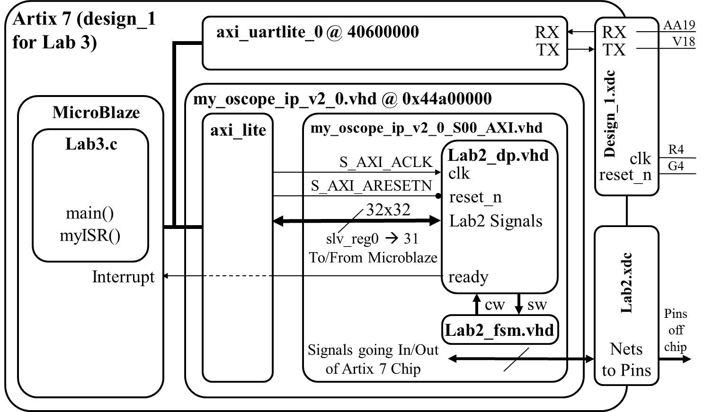

Lab 3 - Software control of a datapath
Lab Overview
In this lab, we will integrate the video display controller developed
in Lab 2 with the MicroBlaze processor built using the fabric of the Artix-7 FPGA.
In the preceding lectures, we learned about the Vivado and
SDK tool chains, now its time to put that knowledge to the test by building
a software controlled datapath. Lab 2 revealed some shortcomings of our
oscilloscope that this lab intends on correcting. Specifically, we will add:
- A horizontal trigger point
- The ability to enable and disable which channels are being displayed
- The ability to trigger off of channel 2
- The ability to change the slope direction of the trigger
The following figure shows required functionality - your program should allow
the user to change the position of the triggerVolt and triggerTime indicators
with the result that the waveform should be drawn so that the periodic waveform
is increasing through that voltage at that time.

In order to accomplish this, you will need to make some minor changes to the
lab2 component, create a new piece of IP, and then program that IP using the MicroBlaze, as described in the block diagram below.
We will walk through these steps below.

Note:
In your program, you will provide a user menu (through the terminal), allowing the user
to adjust the trigger voltage and trigger time. Therefore, you may want to check if the users has hit the
key on the keyboard without having to actually read the key. For
these cases, the following command will prove useful. Note that
"uartRegAddr" is a constant, the address of the uart.
XUartLite_IsReceiveEmpty(uartRegAddr);
Hardware
With the exception of the following Engineering Change Orders (ECO) in
the table below, the hardware you developed in lab2 will be unchanged.
For the following ECO, please refer to the high-level architecture
in
Lab 2.
| Name: | Trigger Voltage, Trigger Time |
| Scope: | lab2_dp and lab2 |
| Type: | Change to the entity descriptions. |
| Details:
|
- Inside the lab2_dp component, remove the logic driving
the triggerVolt and triggerTime signals into the video component.
- Remove the buttons signal from the lab2 and lab2_dp entities.
- Remove the buttons signal from the ucf file.
- Add the triggerVolt and triggerTime signals to the
lab2 and lab2_dp entity descriptions.
- Drive the triggerTime and triggerVolt inputs on the video
component with the corresponding signals on the lab2_dp entity.
|
Your first step will be to create a component for your lab2 component in
your Vivado repository. This will require you to think about what signals
are routed to the MicroBlaze and those going outside the Artix 7 chip.
The following table should help.
| Signals To/From MicroBlaze | Signals Going Outside Artix 7
|
| exWrAddr | clk
|
| exWen | reset
|
| exSel | ac_mclk
|
| L_bus_out, R_bus_out | ac_adc_sdata
|
| exLbus, exRbus | ac_dac_sdata
|
| flagQ | ac_bclk
|
| flagClear | ac_lrclk
|
| triggerTime | sda
|
| triggerVolt | scl
|
| ready | tmds
|
| | tmdsb
|
Software
- All the memory mapped hardware registers will have their names setup
as #define's with a name ending in "Reg".
- Any register with bit fields will have the bit index setup as
#define's with a name ending in "Bit".
- The flagQ and flagClear registers need to be at the same address.
Required Functionality
In order to make required functionality, you will need to properly trigger
the oscilloscope on channel 1 using a positive edge trigger. Control of
this process is to be performed using the MicroBlaze. The main tasks of
the MicroBlaze will include:
- Move audio samples into a pair of circular buffers. These circular
buffers will be maintained in the address space of the MicroBlaze. That
is, you should have two big arrays defined in your program.
Use polling of the ready bit of the flag register.
- Examine the samples, looking for a trigger event.
- Fill the remaining sample slots in memory.
- Move the appropriate buffer values into the display memory of
the oscilloscope (lab2) component.
- Provide a user menu (through the terminal) allowing the user
to adjust the trigger voltage and trigger time.
B-level Functionality
- Achieve required functionality.
- Use the ready bit of the flag register to trigger an interrupt.
The ISR should store the samples (left and right), look for a triggering
event, and signal when the stored samples should be transfered to the
BRAM in the oscilloscope component.
A-level Functionality
- Achieve B-level functionality.
- Ability to enable and disable channels to display
- Ability to trigger off channel 2
- Ability to change the slope direction of the trigger.
Using one bit from a vector to trigger an interrupt
In order to achieve A functionality, this assignment requires you to use a
single bit of Q (the std_logic_vector output from the flag register) as the
interrupt signal. This may require you to extract the one bit Q as a separate
signal to connect to the MicroBlaze in your block design.
Grading
| Item |
Grade |
Points |
Out of |
Date |
Due |
| Required Functionality |
On-Time ------------------------------------------------------------------ Late: 1Day ---- 2Days ---- 3Days ---- 4+Days |
|
40 |
|
COB L22 |
| B Functionality |
On-Time ------------------------------------------------------------------ Late: 1Day ---- 2Days ---- 3Days ---- 4+Days |
|
10 |
|
COB L22 |
| A Functionality |
On-Time ------------------------------------------------------------------ Late: 1Day ---- 2Days ---- 3Days ---- 4+Days |
|
10 |
|
COB L22 |
| Use of Git / Bitbucket |
On-Time: 0 ---- Check Minus ---- Check ---- Check Plus ---- Late: 1Day ---- 2Days ---- 3Days ---- 4+Days |
|
5 |
|
COB L23 |
| Code Style |
On-Time: 0 ---- Check Minus ---- Check ---- Check Plus ---- Late: 1Day ---- 2Days ---- 3Days ---- 4+Days |
|
10 |
|
COB L23 |
| README |
On-Time: 0 ---- Check Minus ---- Check ---- Check Plus ---- Late: 1Day ---- 2Days ---- 3Days ---- 4+Days |
|
25 |
|
COB L23 |
| Total |
|
|
100 |
|
|